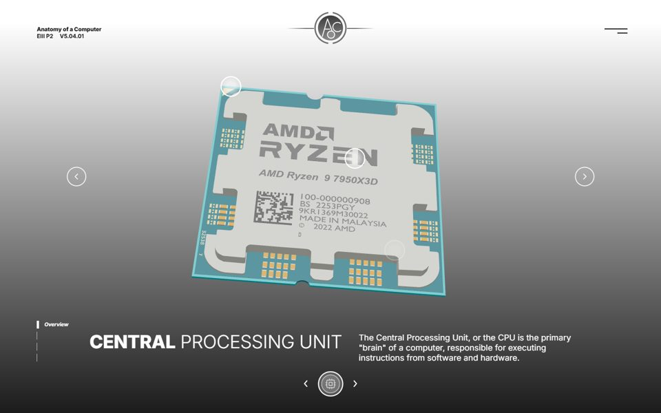

EIII P2 · Interactive
Anatomy of a Computer
Eight real PC parts in 3D. Turn them, take them apart, and x-ray them to follow the power and data along their actual wires, from the wall socket to the pixels on your screen.

Full experience
Live build
All eight parts with five views each, real cables and copper traces, hotspots, a glossary, the size line-up and a drag-and-drop Build a PC workshop.
Open the live build →
Motion mockup, built
Prototype
The designer's 23-second motion mockup as a working site: the intro, sliding parts, hotspot rings, x-ray dissolves and the 1-bit exit.
Open the prototype →The live build follows the power
- Energy
- Power supply
- Motherboard
- Information
- CPU
- RAM
- SSD
- GPU
- Heat
- CPU cooler
- Case
- Start
- Click the start screen. Sound begins after that click; turn it off from the speaker icon, or with M in the prototype.
- Parts
- ← → or the side arrows. Drag a part to turn it.
- Views
- Live: 1–5 for Overview, Framework, Power, Data, Airflow. Prototype: 1 down, 2 up.
- Best on
- A laptop or desktop with a graphics card. It also works on phones.